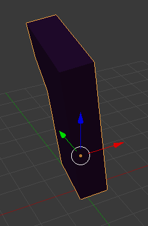

Blender Addon¶
How it’s implemented¶
Blender is written in C, but supports addons written in Python. By following the addon tutorial and referencing other addons, I was able to construct a simple user interface for this project in Blender 2.7.9. Blender 2.7.9 is the latest version supported on the Raspberry Pi.
Everything involved in the Blender addon portion of this project is contained in the __init__.py file. It includes a module-level definition, bl_info, which tells Blender where to place the addon in the menus and what it should be named, some module level functions for managing the update thread, and one class, SensorMenu, which extends a blender Operator to create the menu experience.
Execute¶
When the user presses the menu’s OK button, SensorMenu.execute is called. This function calls self.as_keywords to get all the user menu selections as a dictionary, then passes that dictionary to the main function with the blender context.
main determines what should happen based on what the user selected. The most important selection is running, which is a BoolProperty that appears as a checkbox on the menu. If that item is selected, the update thread is created and started and if it is unselected, the update thread is stopped.
global run_thread, running
run_selection = kw_copy.pop('running')
# ...
if run_selection:
if not running: # create the update thread
running = True
run_thread = threading.Thread(target=update_from_joystick)
run_thread.start()
else:
pass
else:
running = False
if run_thread:
run_thread.join() # destroy the update thread
run_thread = None
Rotations¶
The core of the logic that parses sensor data into object rotations is contained in the update_from_joystick function, which is executed by the update thread as the program runs. It converts readings from JoystickReader, based on user settings, into the appropriate rotations. Matrix rotations are used when the rotation mode is absolute and Euler rotations are used when the rotation mode is relative.
Each update, if the program is running, the thread tells JoystickReader to get a round of values from the sensor then retrieves the rolling averages (or last value, depending on menu settings) from it.
If the retrieved values indicate that the user is pressing the top button on the joystick, the retrieved values are used to apply rotations to every object the user selected at the time the menu was executed.
If the user had set the rotation mode to Absolute, the objects will be rotated along the world axes in Blender. So pitching the joystick forward, in rotation mode absolute, always causes selected objects to rotate on the world’s X axis. The following image shows an Object aligned with the the world axes. The blue line represents the Z axis, the green the Y axis, and the red the X axis. No matter how the object is oriented, those lines will stay pointed in the same direction.
To perform absolute rotations, matrix math had to be used. Each object has a world matrix which is related to its location, rotation, and scale. The world matrix is first decomposed into its inner values by calling decompose on the objects matrix_world.
decompose returns a Vector for the object translation, a Quaternion for the object rotation, and a Vector for the object scale. Each of these objects have methods to derive Matrix objects, and their references are replaced with Matrices.
Next, a new Matrix called new_rotation is initialized to represent the user-input rotation change. For each axis, a new Matrix is created and new_rotation is reassigned to the value of itself multiplied by that new matrix.
A new world matrix for the object is then assembled by matrix multiplying:
new world matrix = original location * new rotation * old rotation * old scale
For relative rotations, the change can be applied by calling the rotate_axis function of the rotation_euler attribute of the 3DObject being manipulated and passing in the relative axis.
If the user is pressing the trigger button, the 3d object(s) will also change position based on joystick movement. Pitching forward and back moves the objects forward and back relatively. Their forward vectors are found by taking the second column of the object world matrix, which is a column-major matrix. That vector is multiplied by the change in pitch. Each component of that 3d vector is added to the object’s location property to move it forward and backward. The process for moving the object side to side as the joystick yaws is similar, except the first (index 0) column of the world matrix is taken to find the x vector.
__init__.update_from_joystick() is reproduced here:
global selected_objects
global settings
global j_reader
shrinkage = settings["shrinkage"]
movement_modifier = settings["movement_shrinkage"]
yaw_shrinkage = shrinkage / 2
interval = settings["update interval"]
if settings["averages"]:
get_func = j_reader.get_averages
else:
get_func = j_reader.get_last
while running:
j_reader.get_vals_from_sensor()
vals = get_func()
for obj3d in selected_objects:
if not vals['top']: # if the top button is pressed
if settings["rotation type"] == "Absolute": # use operator for absolute rotations
location, rotation, scale = obj3d.matrix_world.decompose()
location = mathutils.Matrix.Translation(location)
# location is given as a vector and has to be a matrix for recomposition
rotation = rotation.to_matrix().to_4x4()
# rotation is given as a Quat and has to be a matrix for recomposition
scale = mathutils.Matrix.Scale(scale[0], 4, (1, 0, 0))
# same with scale (a vector)
new_rotation = mathutils.Matrix.Rotation(0, 4, 'X')
# start with a 0 rotation
if settings["yaw active"]:
new_rotation *= mathutils.Matrix.Rotation(-vals["wy"] * yaw_shrinkage, 4, 'Z')
if settings["pitch active"]:
new_rotation *= mathutils.Matrix.Rotation(vals["wx"] * shrinkage, 4, 'X')
if settings["roll active"]:
new_rotation *= mathutils.Matrix.Rotation(vals["wz"] * shrinkage, 4, 'Y')
obj3d.matrix_world = location * new_rotation * rotation * scale
# to perform absolute rotations, they have to be added before the existing rotation
# as the matrix is re-assembled from its components
else: # perform relative rotations
if settings["yaw active"]:
obj3d.rotation_euler.rotate_axis("Z", -vals['wz'] * yaw_shrinkage) # yaw
if settings["pitch active"]:
obj3d.rotation_euler.rotate_axis("X", vals['wx'] * shrinkage) # pitch
if settings["roll active"]:
obj3d.rotation_euler.rotate_axis("Y", -vals['wy'] * shrinkage) # roll
if not vals['trigger']: # if the trigger is pressed
if settings["movement forward"]:
forward_vector = obj3d.matrix_local.col[2] # column major matrix, 3rd col is fwd vector
new_vec = forward_vector * 1 # just copies the vector
new_vec.resize_3d() # make it 3 instead of 4
new_vec.normalize()
new_vec *= -vals['wx'] # pitch controls forward/backward when trig pressed
obj3d.location.x -= new_vec.x * movement_modifier
obj3d.location.y -= new_vec.y * movement_modifier
obj3d.location.z -= new_vec.z * movement_modifier
if settings["movement side"]:
left_right_vector = obj3d.matrix_local.col[0]
new_vec = left_right_vector * 1
new_vec.resize_3d()
new_vec.normalize()
new_vec *= -vals['wz'] # yaw controls left/right when trig pressed
obj3d.location.x -= new_vec.x * movement_modifier
obj3d.location.y -= new_vec.y * movement_modifier
obj3d.location.z -= new_vec.z * movement_modifier
time.sleep(interval)
joystick_control (the blender files)¶
joystick_control/.__init__ contains all the references that interact with Blender, including the menu and functions which modify the selected objects.
The folder joystick_control should be placed in Blender/scripts/addons directory. It will then appear in Blender as Object: Motion Sensor Joystick Controls’ in the list of available addons in the settings > addons menu.
Once installed, pressing spacebar and searching for Open Joystick Menu provides access to the in-blender User Interface.
-
__init__.bl_info= {'author': 'klm127', 'blender': (2, 70, 0), 'category': 'Object', 'description': 'Create links to acceleration sensor', 'location': 'Spacebar; search', 'name': 'Motion Sensor Joystick Controls', 'version': (0, 1), 'warning': ''}¶ - Envar
bl_info sets the addon information. Every blender addon file module must start with a dict named bl_info.
-
__init__.run_thread= None¶ A thread. Initialized to None - when the program is running, references active update thread.
- Type
-
__init__.selected_objects= []¶ The objects user currently has selected.
- Type
list<
bpy.types.Object>
-
__init__.j_reader= None¶ The Joystick reader, created on first execution.
-
__init__.settings= {'averages': True, 'keep vals': 10, 'movement forward': True, 'movement side': True, 'movement_modifier': 0.05, 'pitch active': True, 'roll active': True, 'rotation type': 'Absolute', 'shrinkage': 0.03, 'update interval': 0.08, 'weight': 0, 'yaw active': True}¶ Default settings.
-
class
__init__.SensorMenu[source]¶ SensorMenu defines the popup menu that appears in Blender when the Command is run.
- Type
-
running= None¶ Selection data controlling whether addon should be updating objects.
-
trigger_pin= None¶ Selection data controlling what GPIO pin Trigger button is wired to.
-
top_pin= None¶ Selection data controlling what GPIO pin Top button is wired to.
-
update_interval= None¶ Selection data controlling how long between sensor readings and updates.
Minimum 0.02, maximum 1 second.
-
averages= None¶ Whether sensor reads should be averaged or just the last read.
Default is True.
-
keepvals= None¶ How many values the sensor should store for averaging.
Default is 10.
-
weight= None¶ How much to weight the last reading.
Default is 10.
-
shrinkage= None¶ Multiplies gyroscope readings by this fraction to reduce sensitivity.
Minimum is 0.01. Maximum is 0.5
-
movement_shrinkage= None¶ Multiplies gyroscope readings by this fraction when performing translations (during trigger press).
This is more sensitive than rotations are, so it needs to be reduced more.
Minimum is 0.0001. Maximum is 0.5
-
yaw_enabled= None¶ Whether yawing the joystick causes the selected object to yaw when running.
-
pitch_enabled= None¶ Whether pitching the joystick causes the selected object to pitch when running.
-
roll_enabled= None¶ Whether rolling the joystick causes the selected object to roll when running.
-
movement_forward= None¶ Whether pitching the joystick forward/back with the trigger pressed causes the object to move in its forward/back direction.
-
movement_side= None¶ Whether rolling the joystick with the trigger pressed causes the object to move in its left/right direction.
-
rotation_type= None¶ Whether to rotate the object relatively or on its absolute axis.
-
execute(context)[source]¶ Executed when “OK” is pressed on the popup menu.
Sends user selection to
main()for execution.- Parameters
context (
bpy.types.Context) – The blender context, referencing the selection and active window.
-
invoke(context, event)[source]¶ Executed when addon is executed from the command selector (spacebar in Blender).
Creates the
bpy.types.WindowManager, then causes draw to execute based on SensorMenu attributes.- Parameters
context (
bpy.types.Context) – The blender context, referencing the selection and active window.event –
-
draw(context)[source]¶ Called when the menu is opened.
Gets the selected objects. Reads user selections into settings.
Creates a new update thread if running is active which begins reading sensor info and applying it to blender objects.
- Parameters
context (
bpy.types.Context) – The blender context, referencing the selection and active window.
-
__init__.main(context, **kw)[source]¶ Called after “OK” is pressed on the UI Window. Parses user selection to control program behavior.
Starts the update thread if one doesn’t exist and the user selected “running”.
Stops and deletes the update thread if one does exist and the user did not select “running”.
The thread executes
update_from_joystick()- Parameters
context (
bpy.types.Context) – The blender context, referencing the selection and active window.kw (list) – Represents user selection
-
__init__.update_from_joystick()[source]¶ This function is what is executed by run_thread every update interval.
Gets raw data from the joystick reader and applies it to the selected objects in Blender.